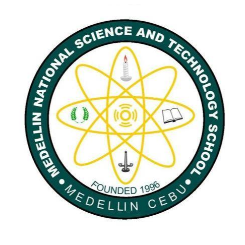

Hello World!
A driven and detail-oriented 3rd year Computer Engineering student in University of San Carlos. I am a self taught Web Development programmer. I can do both front end and back end of the website. I am seeking a challenging role in a dynamic and fast-paced environment where I can apply my skills and experience to make a positive impact. I am skiled in problem-solving and critical thinking, as well as the ability to work well in teams. My coursework includes classes in digital logic, computer architecture, data structures and algorithms, and software engineering
🏫Educational Background🏫
 2020-PRESENT 📌 BS Computer Engineering (University of San Carlos)
2020-PRESENT 📌 BS Computer Engineering (University of San Carlos)
2017-2020 📌 Senior High School - STEM (University of San Carlos)
 2013-2017 📌 Junior High School (Medellin National Science and Technology School)
👾Recent Projects 👾
Dice Game 📌 Dicey
Guessing Game 📌Guess That Number
ChatWheel 📌 Dota 2 Kit
💻Programming Languages💻
C Programming -âââ
Python Programming -ââ
Java Programming -ââââ
Javascript Programming -âââââ
✅Area of Expertise
mySQL and Firebase as database
Java,Python,C,and Javascript projects
Scrum and Agile Methodologies
Web Application Design & Development
👩🏻‍💻Work Experience👩🏻‍💻
Kell Tech(Software Engineering Intern)
Supported Kell Tech's testing and engineeing process. Collaborated with the development team on coding and testing of new software applications. Improved the efficiency of the team by documenting and organizing the software development process, reducing the amount of time spent on administrative tasks.

Software Engineer(Test Inc)
Developed a new feature that increased user engagement by 20%, resulting in positive feedback from customers and stakeholders. Improved the performance of the software by optimizing database queries and caching mechanisms, resulting in a 30% reduction in page load times. Mentored junior developers on coding best practices, resulting in improved code quality and team efficiency.
Get In Touch
You can visit my profiles here
Love coding? Let's talk. Let's code together for the future of this world!
CONTACT ME